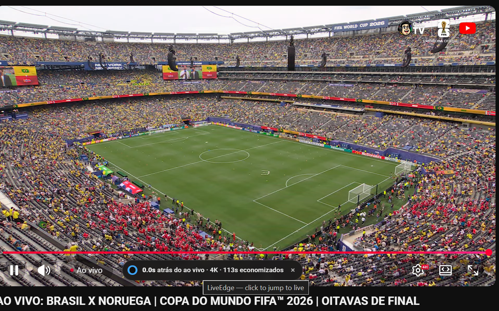
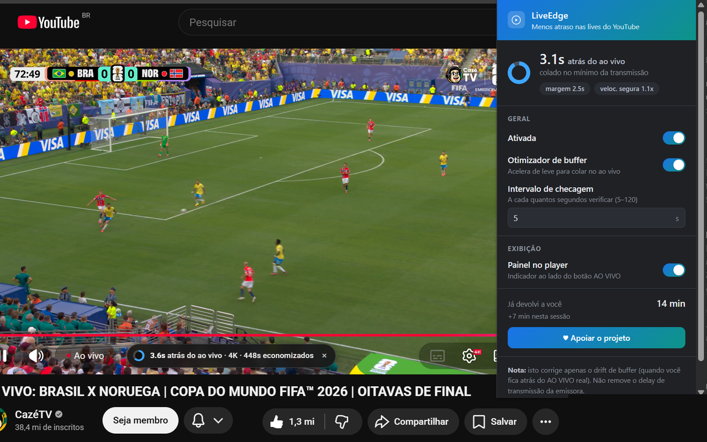
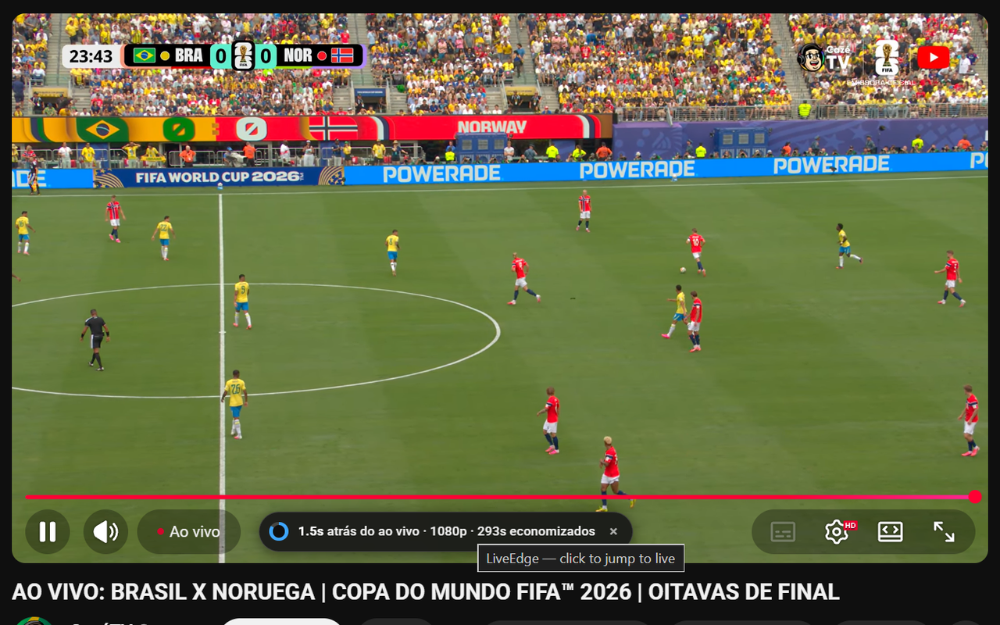

LiveEdge
LiveEdge
Chega de saber do gol
pelo grito do vizinho.
O LiveEdge mantém as lives do YouTube coladas no ao vivo — automaticamente, sem você configurar nada. Um medidor discreto na barra do player mostra o seu atraso em tempo real.
Instalar na Chrome Web Store
Brasil x Noruega na CazéTV, oitavas da Copa 2026 — 0.0s atrás do ao vivo, em 4K.
O que ele faz
Ressincronização automática
Detecta quando o player fica para trás do ao vivo (drift de buffer) e te traz de volta, sozinho.
Otimizador de buffer
Acelera a reprodução de forma imperceptível para encostar na borda da transmissão — e recua se a sua rede não sustentar. Sem travamentos.
Medidor de atraso
Indicador ao lado do botão AO VIVO mostra quantos segundos você está atrás — e quantos já foram devolvidos. Um clique pula direto pro ao vivo.
Zero configuração
Ele mede a sua rede e se ajusta sozinho: aprende o menor atraso que a sua conexão aguenta. Instale e esqueça.
Zero coleta de dados
Sem analytics, sem rastreamento, sem requisições externas. Tudo fica no seu navegador. Política de privacidade.
5 idiomas
Português, English, Español, Français e Deutsch — segue o idioma do seu navegador.
Veja funcionando

Status ao vivo no popup: atraso atual, margem da rede e tempo devolvido.

O medidor vive na barra do player — 1.5s atrás do ao vivo, colado no mínimo.
Honesto por princípio
O LiveEdge reduz o atraso que se acumula dentro do seu player. Ele não remove o delay de transmissão da emissora (encoder/CDN), que existe antes do vídeo chegar ao seu navegador — nenhuma extensão consegue isso. O que dá pra eliminar, ele elimina; e te mostra o número real.
Apoie o projeto
Todos os recursos estão disponíveis para todos — não existe plano pago. Se o LiveEdge melhorou suas lives, você pode apoiar o desenvolvimento com uma doação via Pix (na página de apoio da extensão) ou pelo Ko-fi.